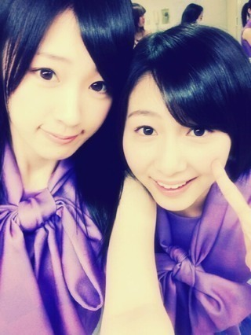
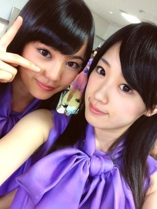

2013/0328Thu（´-`）.｡oO(か ずみん×152
こんばんは^ ^
沢山のコメントありがとう( ∩ˇωˇ∩)
やんちゃ高山の方が
人気だったかな(｀･ω･´)？
答えてくれた人、thanks☆
前回のブログで書いた、
初ソログラビアはUTBさんでしたっ♪
UTBさん、ありがとう(T_T)♡
ソロの仕事だと思うことが沢山あった。
とにかく楽しかったです(*∩ω∩)
あぁ、撮影は大好きです。
雑誌のお仕事は本当楽しい。
今回のUTBさんは
私の大好きな昭和レトロな感じに。
ぜひ、またよろしくお願いします！
発売前になったら、
またお知らせしますね！
あと、浜ちゃんが！
にも出演します(*ﾟﾛﾟ)!!
みなさん優しくて、本当にわいわいした
番組でした( *´艸｀)
ありがとうございました♪
OAは4月4日です！
他にまだまだ仕事が沢山！
ありがたいねぇ(T_T)
あかん警察は3月31日です！
みなさん見て下さい！
これからも頑張るぞ〜！
------
昨日、今日とライブもありました！
久々のステージ。
やっぱり楽しかったです！！
来てくださった皆さん、
ありがとうございました(>_<)
体調を崩している時、
家でモーニング娘。さんの
シャボン玉をずっと見てました。
やっぱミキティかっこいいな(>_<)、
今はさゆみん推しですが、
卒業するまではミキティが好きで。
見ていて参考になりました。
今日はみなみの代わりに市來先生!!

ついでに生田社長も。笑笑

お疲れ様でした(^^)
あ！市來先生ファンの皆さん、
れなりんはパソコンが今壊れたらしくて
ブログが書けないそうです(T_T)
早くなおりますように...！
でも元気なので安心してね♪
それでは、今日はこの辺で。
みんないつもありがとう。
お休みなさい( ´ ▽ ` )ﾉ
2013/03/28 22:54


コメント(501)
病みあがりでいきなり二日連続は辛かっただろうけど、体調はもう大丈夫？
自分は昨日数時間雨に打たれて風邪ひきそう（笑）
せっかくかずみん復帰したのに(T_T)
買うよ！
ものすごく楽しかったーーーゼゼゼゼゼーーーーイ！！
アメイジング＼(^o^)／＼(^o^)／
なにより のど治ってて ホントに安心した〜
花粉症もツライよね( °̥̥̥̥̥̥̥̥з°̥̥̥̥̥̥̥̥)
でも、かずみん持ち前の明るさで 吹き飛ばしちゃってくださ〜〜い☆*:.｡. o(≧▽≦)o .｡.:*☆
友人のyoshiも いきたいと言っておりましたが、残念ながら部活で来れないとのことでした
だから、ぼくは、yoshiの、ぶんも、かずみんに、大声で、叫んだよ、うん
まぁね、お陰でね、喉がね、ヤバイす(°_°)
あと、今日のZIP！春フェス お疲れ〜☆〜（ゝ。∂）
見に行きたかったよ、でも最近カネがないんす( °̥̥̥̥̥̥̥̥з°̥̥̥̥̥̥̥̥)( °̥̥̥̥̥̥̥̥з°̥̥̥̥̥̥̥̥)( °̥̥̥̥̥̥̥̥з°̥̥̥̥̥̥̥̥)( °̥̥̥̥̥̥̥̥з°̥̥̥̥̥̥̥̥)
これからも応援してま〜す
じゃ。
雑誌絶対買うからね！
かずみさんバラエティで引っ張りだこ！！どんどん知名度上がって嬉しいです（ ´ ∞ `＊）
これからも応援してますかずみさんだいすき
まくゆ( ＊･ω･＊ )ﾌﾟｸｰ
相変わらずかわいいね！31日握手会楽しみにしてまーす！
無理しないで下さい。
あとアカン警察も見ますよ！！てか、録画するぜぃ！！V(^_^)V
なんか、前にダウンタウンDXに出てからかずみんダウンタウンさんと仕事増えましたね！！
なんか、松本さん浜田さんとめっちゃ息が合ってて面白かったからかなぁ？
とにかく、良かったですね！！(*^◯^*)
写真はソク保存しましたー！！！(￣▽￣)
可愛いすぎますよ〜！！
では、また更新まってまーす！！
Yeah!
頑張ろう(^O^)／
テレビで見れるなんて嬉しい！
あかん警察録画して何回も見る！
かずみん2日間ライブお疲れ！
早くかずみんに会いたい！
でもなかなか予定が合わなくて
握手会とか行けない（泣）
録画してある乃木どこ
みてかずみんパワーもらってる！
かずみんお仕事頑張ってね！
(・ω・)ノ
ファンタジスタやでヽ(^o^)丿☆
今日も一日お疲れ様♪
おおー！！ついにかずみんもソログラビアデビューなのね☆
これは楽しみやなあ♪
今回はれいかちゃんがソログラデビューしてたもんね☆
買うっきゃないな♪
発売楽しみにしとるで☆
かずみねーさん、最近また大忙しですな。
まだまだこれから、イベントや撮影あって大変かもしれへんけど、
体壊さないでね☆
そして来月の７日の全握会えるの楽しみにしとるで☆
さて、高山のねーさんに質問しよーのコーナー
Ｑ「メンバーとよく変顔とか撮るのかな？」
誰とよく撮るのか教えてね☆
バイメイジング～♪
かずみんチェックで忙しくなるなんてこの上なき幸せ笑
昨日今日って、愛知行って来たよー(^^)
友達がSKEファンなのでSKEカフェにもいって、伊勢神宮にもいって櫃まぶし食べて、充実しまくった^_^
けど、車ずっと運転して疲れた( ´ ▽ ` )ﾉ
こんばんは♪
今日は行けなくて残念です(T-T)
れなりん今ブログ書けないんですか！？(T-T)
かずみんのメディアは必ずチェックします！
明日も頑張ってください(^-^)/
では、お休みなさい(-.-)Zzz・・・・
かずみん こんばんは ( ´ ▽ ` )ﾉ
やんちゃ の方が人気やったんやね ∑(ﾟДﾟ)
どっちも違った魅力があって素敵だと思うよ (*^^*)
UTB 発売されたらチェックするね！
昭和レトロな かずみん 楽しみ ♪( ´▽｀)
あかん警察はもう録画予約済み (｀･ω･´) ﾄﾞﾔｯ!
浜ちゃんが！もばっちしチェックするね ＼(^o^)／
ライブおつかれさま (#^.^#)
体調もすっかり回復したみたいで一安心 ♪
おやすみなさい (*^_^*)
てか、なんか俺も花粉ヤバなってきたT_T
ほんでなんとなんとなんと…髪染めたんや 明るめの茶色（￣+ー￣）
似合ってるかまた握手会で教えて笑
あ、それと今俺めっちゃ服欲しいねん…>_<…
イーエルオーでかずみんの好みのコーデ見たけど、正統派なんや
勉強なったわ笑 次から握手会正統派のキレめで行こ（≧∇≦）
最後に質問
かずみんが肌綺麗に保つために毎夜やってことってなんかある？教えて(*^o^*)
かずみん、お疲れー♪
少しまだ咳き込んだりもしてたけど元気な姿を見られて良かったよ(^^)
まぁ、ＰＯＮ！祭も一応見てたんだけどね(^_^;)
テレビも雑誌も楽しみにしてるね！
先生と社長にヨロシク(笑)
お疲れ様でした！
久々だから、かずみんも気合いも
入っていたと思いますが無理しないように！
ドンキューでした！
今日も、
２回に分けて、
コメントを書くので、
２回目をぜひ見てください(^O^)／
では、また(^O^)
UTB出たら絶対買います！
かずみさんのしゃめ見ると
本当になんでもがんばれる
気がします！！！
やっぱり高山ちゃんがいないと乃木坂は、盛り上がらないです。
初ソログラビアはUTBなんだ
おめでとう
昭和レトロな感じなんだ
絶対買うね
浜ちゃんが！出演おめでとう
これもチェックだね
仕事が沢山で大変だと思うけど頑張ってね
昨日今日とライブお疲れさま
昨日のPONは見に行ったよ
久々にかずみん見れてよかったです
今度は握手会でよろしくね
ゆっくり休んでね
ではでは
リトルもっちゃん
ライブ行きたいなぁ～☆
雑誌もテレビも観るからねっ！楽しみにしてるよ～♪
ミキティは俺も大好きだったよ！だから、結婚した時はマジ失恋した気分で辛かった。(笑)
幸せそうだからファンとして嬉しいけどね☆
色々忙しくて大変そうだけど、体に気を付けて頑張ってねっ！
そんじゃ、またねぇ☆
今日も一実が、笑顔でありますように！！
まさかの他のアーティストさんのファンのおかげで最前列で見れました。
前半はかずみんがほとんどステージ向かって右にいて見えなかったけど
後半は近くにきてくれてホンマに嬉しかったです！
MCのときも何度かみてくれて微笑みかけてくれてなんかLIVEも最高なのにさらにテンションがあがってしまって。笑
しかも最後MC終わって退場するときにアメイジングをリクエストしたらミニアメイジングしてくれて…。
ありがとうございます。ほんとに！
あんな距離で見れる機会が殆どないので貴重な体験でした。
次回は31日の個別会いにいくのでよろしくおねがいします！
名前覚えてくれてるとなお◎
追伸
MCのとき何度か咳してたのが気になりました。
この時期は乃木坂的にも忙しい時期だと思いますがかずみんの体調も心配なので無理しないでください。
かずみんのいない乃木坂は考えれません！！！
いや〜、さすが仕事運2位のかずみんですね〜☆
UTBですね〜(^o^)
浜ちゃんが！ですね〜(^O^)／
あかん警察ですね〜＼(^o^)／
はぁ〜い、チェック！チェック〜！
調子良いゾーーV(^_^)V
だ・け・ど！
体調には気を付けて下さいね☆
やっぱかずみさんはやんちゃでしょ（笑）
UTB楽しみ！浜ちゃんがに出んの！？
完全に浜ちゃんに気に入られたな！！！
回復は順調そうだな！
なによりなにより（＾ω＾）
まぁまだ無理せんようにな！
体調には気つけや（笑）
こちらこそいつもありがとう（＾ω＾）
(つ∀-)ｵﾔｽﾐｰ
わたし、かずみんをテレビとかで見てたくさん元気もらっているんですヾ(＠⌒ー⌒＠)ノ あと、ポジティブになっています！笑
お仕事頑張ってくださいね○
行きたかったんだけど実家に帰る用事があったから行けなかった(T . T)
かずみんの体調が良くなったみたいで本当に良かった！
生田社長のキリリ感がすごいね（笑）
31日は握手行くからよろしくね〜
ちなみに僕はスキーやってるんだー
かずみん、お帰りなさい！ ライブで叫んでたけど聞こえてないと思うので、書き込み！
めっちゃ楽しみ＼(^o^)／
PON祭りの方に行ったんだけど元気そうで良かったー！頑張れアメイジング高山！
UTBソログラビア(ノ´∀｀)ノぉめでとぉ☆
絶対買うしか！！
かずみん完全にダウンタウンさんにハマったよねww
浜ちゃんが！とあかん警察絶対みるねーー！！
二日連続LIVEお疲れ様！
喉大丈夫だった？
昔はミキティ推しだったんだね、初耳！
うぉぉぉ市來先生と生田社長だ＼(^o^)／
ではー(￣^￣)ゞ
おやすみー☆GOODNIGHT☆
ブログ更新ありがとうo(^-^)o
そしてお疲れ様…
やっぱりUTBかずみんか！嬉しい♪
10冊買えるかなぁ(;_;)
心配だぁ…みんなに配らなければならないのに(;_;)
1冊も買えな…い訳ない！
かずみんのソログラビアが載ってるUTBいつ買うの？
今でしょ(笑)
浜田さんに気に入られてますなぁ(￣ー￣)
さすがかずみん！アイドルとしてもタレントとしてもやっていけるさ！
でも…私の中では永遠のアイドルです♪(/ω＼*)
かずみんの歌ってるときの笑顔…すごく好きなんだよね♪
楽しそうで見てて元気になる！
だから、ライブには行けなかったけども…
ライブに出れたと聞けただけで元気になりました♪
ありがとう(*^^*)
れなりんといくちゃん可愛いなぁo(^-^)o
それに比べてかずみんは…
可愛いすぎるぜぇ
ダントツ可愛い♪←嘘っぽいけど本当よ！
照れますな(/ω＼*)
かずみん好きです！これからも頑張って！
あ！31日は個別かな？
はりきりすぎるなよ(笑)
体調崩すなよ(;_;)
悲しくなるから(;_;)
ではここら辺で…
またね(o^∀^o)ノ
最後に…
元気なかずみんになって嬉しいです。
テレビ見るからね！
明里(o・・o)/~
UTBの発売がめっちゃ楽しみだなぁ♪
浜ちゃんが！観るよ♪
おやすみ(-_-)zzz
やんちゃだろうとキリッっとしてようと
ぼくは君が好きだー！！
あ、浜ちゃんが！見させてもらいます！＾‐＾９
どっちも良すぎて困るよ～笑
絶対みるね！！
３１日楽しみがぁ～
体調は崩さず、お仕事頑張ってね♪
ゆってぃーでした！！
なんかかずみん、
宣伝がいっぱいだね！笑
ファンとしては嬉しい限りです♪
前回のダウンタウンDXから
ダウンタウンさんの番組が多いね♪
ダウンタウンの浜田さんに
気に入ってもらえたのかもよ！笑
久しぶりにライブでれてよかったね(^^)
見に行けなかったのが残念(>_<)
話変わるけど、プリンシパル応募したよ！
かずみんの勇姿を見に行けるといいな♪
では、おやすみなさい(-.-)Zzz・・・・
またコメントするね♪
今月来月とかずみんをたっぷり見れてうれしい限り＼(^o^)／
UTBの昭和レトロ調かずみんグラビアも超ー楽しみです！
ツイッター情報だと普段とかなりギャップがある感じとのことなので
結構しっとりめに撮れてるのカナ？
元気になられたみたいで良かったです♪
玲奈さんの報告、ありがとう御座います＊
ブログが更新できる時を待ってるとお伝え下さい＊
申し訳ありませんが、お願い致します。。
カッシー★でした(^^)/
Zip春フェス楽しかったよ＼(^o^)／
やっぱりライブは良いね(・∀・)ノ
元気になれるよー♪
かずみんが元気に歌って踊ってるの見て安心した！元気になって本当に良かった
たくさん仕事もあるみたいだからポジティブに楽しんでね！
また会えるの楽しみにしてるよ(^^)ﾉｼ
だっさんです(^-^)/
ライブお疲れ様(^o^)
テレビ出演が多くなったね(*^^*)
必ず見るね！
(忘れたら……)
体調気をつけてo(^o^)o
またね♪
んんんん、アメイジング＼(^o^)／
よかったです。
今日はイベントお疲れさまでした。
かずみさんもゆっくり休んでね♪
いちでした。
告知、ありがとです。
ブログの顔文字みていると、かずみんのあの変顔が浮かびます！！笑っ
でも真剣な顔で歌うかずみんも好き！(^^)
花粉のピークももうすぐ終わるから、もうちょっとだね。
お大事にどうぞ⌒☆＊
LIVEお疲れ様でした！
観に行けなかったのが残念です(>_<)
でら今日もお仕事など
頑張ってください(^-^)/
かずみん大好きですよー☆
もちろんUTBは買うよ＼(^o^)／
ライブ行きたかった…
2回目のコメントです(^O^)／
もしかして、
もう、かずみんは完全復活かな？
この前、幕張では握手できなかったので、
名古屋では、よろしくお願いしますね（*^_^*）
というか、
俺、かずみんファンと言いながら、
まだ、かずみんと、握手したことないんですよ(>_<)
今度の握手ホントに楽しみですわ（＾ｖ＾）
よろしくお願いしますね(^O^)／
＊＊＊＊＊＊＊＊＊＊＊＊＊＊＊＊＊＊＊＊＊＊＊＊＊＊＊＊
そういえば、俺、
昨日のライブも、今日のライブも、
どっちも行けませんでした(T_T)
悲しいです(>_<)
でも、心の中で応援してましたよ(^O^) 笑笑
あと、
アカン警察もうそろそろですね(^O^)／
というか、
もしかして、
ダウンタウンにはまったんじゃないですか！？
浜ちゃんがにも出るし(^O^)
とにかく俺は、
かずみんが色々なテレビに出れることを
祈ってます（*^_^*）
今日は、この辺にしますわ(^。^)
今日はお疲れ様でした（＾ｖ＾）
応援してます
頑張ってくださいね(^O^)／
お仕事頑張ってください♪ヽ(´▽｀)/
案外と早かった印象が(笑)(笑)(〃▽〃)(〃⌒ー⌒〃)∫゛にしても、そーいう感じでやんすか～
色々とオーダーがあるんですなも～あっ何気に高一ピチピチの
生田さんがいらっしゃいますな～スタイル良いですからな～(〃⌒ー⌒〃)∫゛o-_-)=○☆
後一年ぐらいでかずみんも抜かれちゃいそうな予感ぜよ
最近、色んなかずみんが見れて嬉しいね!!
へばっまずな(^-^)/~~
体調崩さないように気を付けてねΣd(>ω<`)
コメントする